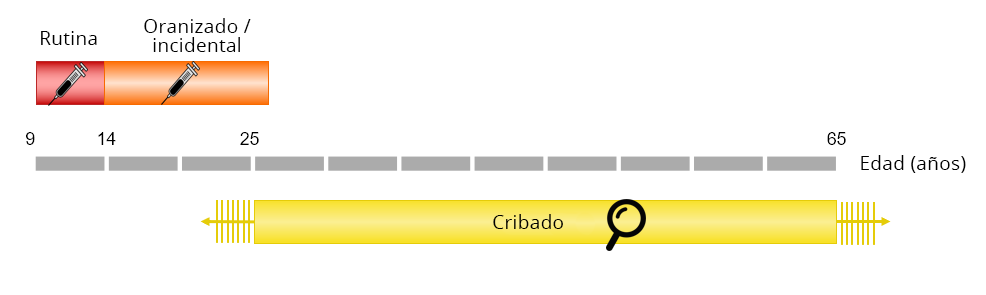
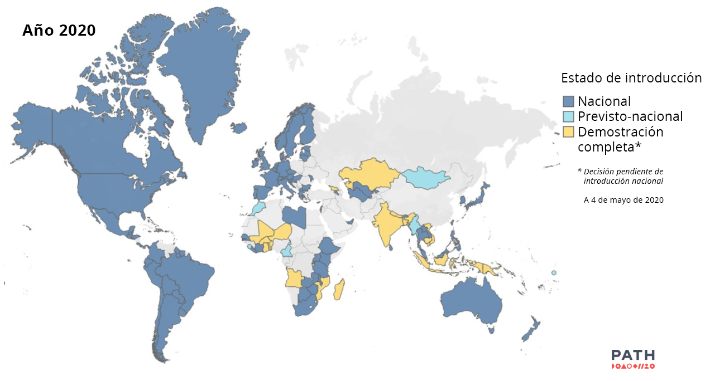

3.3 Estrategias preventivas del cáncer de cuello uterino
Existen básicamente dos tipos de estrategias de prevención del cáncer de cuello uterino: la vacunación contra el VPH, que forma parte del programa de inmunización rutinario o de las campañas de recuperación, y el cribado, que suele efectuarse entre los 25 y los 65 años de edad.
Aptima ha sido validada para la detección primaria por la FDA como parte de un proceso de pruebas conjuntas junto con la citología. Según la información disponible, Aptima muestra una positividad de prueba ligeramente menor, pero una sensibilidad no inferior en comparación con HC2 (sensibilidad relativa: 0,98, IC del 95%: 0,95-1,01). La detección de ARN en lugar de ADN tiene como objetivo identificar la actividad viral en lugar de la mera presencia del virus, lo que debería resultar en una mayor especificidad, es decir, en menos mujeres derivadas innecesariamente para realizar otras pruebas adicionales. De hecho, en comparación con HC2, se ha demostrado que Aptima tiene un 4% más de especificidad (especificidad relativa: 1,04, IC del 96%: 1,02-1,07), lo que resulta en un 23% menos de derivaciones debido a un aumento en el valor predictivo positivo para un prevalencia determinada en cuanto a la evolución de la enfermedad [18]Iftner T. Are HPV DNA or HPV E6/E7 mRNA assays the better solution for Cervical Cancer Screening?..
FIGURA 14 Figura conceptual de las estrategias de prevención del cáncer de cuello uterino disponibles por edad.
Vacunación contra el VPH
Como intervención de prevención primaria, la vacunación contra el VPH tiene como objetivo evitar la adquisición de infecciones por el VPH. En 2020, hay tres vacunas comercializadas cuyas principales diferencias se derivan de los tipos de VPH cubiertos:
Vacuna bivalente (Cervarix®, GSK): tipos de VPH 16 y 18.
Vacuna cuadrivalente (Gardasil®, MSD): tipos de VPH 16, 18, 6 y 11.
Vacuna nonavalente (Gardasil 9®, MSD): tipos de VPH 16, 18, 31, 33, 45, 52, 58, 6 y 11.

La fracción prevenible de cada cáncer corresponde a la prevalencia específica de los tipos de VPH incluidos en cada vacuna. Si aplicamos esta fracción prevenible a la cifra de cada cáncer específico relacionado con el VPH, obtenemos el número de cánceres que podrían prevenirse.
La suma de los cánceres que podrían prevenirse dividida entre el número total de cánceres relacionados con el VPH da como resultado que el 71 % de los cánceres pueden prevenirse con las vacunas bivalente y tetravalente (tipos de VPH 16/18) y el 87 % con la vacuna nonavalente (VPH 16/18/31/33/45/52 y 58).
FIGURA 12 Mapa mundial de introducción de la vacuna contra el VPH a 4 de mayo de 2020 (PATH 2020).
- Especialmente en los países en desarrollo, la vacunación contra el VPH se ha enfocado principalmente a una o unas pocas cohortes de niñas adolescentes. Se ha calculado que se necesitarán 20 años, cuando las niñas vacunadas alcancen la treintena, para observar un descenso en la incidencia del cáncer de cuello uterino.
- La vacunación rutinaria sin distinción de género solo se ha implantado en unos pocos países.
Cribado del cáncer de cuello uterino
A pesar de la disponibilidad de las vacunas contra el VPH, el cribado seguirá siendo necesario y la principal intervención preventiva en muchos entornos para las mujeres no vacunadas.
El cribado no es solo una prueba inicial, sino una serie de pasos hasta el diagnóstico que se describen con más detalle en los siguientes módulos del curso:
Las opciones para la prueba de cribado primario en la población asintomática se proporcionan en el módulo 3. En el módulo 5 se detallan las opciones para la prueba de triaje de las mujeres con resultado positivo en el cribado, junto con las pruebas de diagnóstico y las opciones de tratamiento de las lesiones precancerosas.
El uso de dispositivos de automuestreo para las pruebas de cribado primarias para aumentar la cobertura se incluye en el módulo 4.
Aún se desconocen los requisitos posteriores en las mujeres vacunadas, por lo que es posible que sea necesario adaptar los protocolos de cribado. Los datos disponibles sobre este tema se detallan en el módulo 6.
Las mujeres inmunocomprometidas, especialmente las que tienen el VIH, precisan de estrategias de cribado más intensivas, descritas en el módulo 7.
Por último, el módulo 8 incluye una serie de aspectos que hay que tener en cuenta para implantar un programa de cribado con éxito.
¡Enhorabuena!
Has completado este módulo